Tarefa: Fundamentos HTML
Para iniciarmos nossas atividades com a programação Web em si, vamos começar
fazendo o esqueleto da nossa página. Para isso, utilize as tags HTML apresentadas
em sala e monte toda a estrutura do nosso site. Não se preocupe em estilizar essa
página, vamos aprender isso nas próximas aulas.
Início
Sobre nós
Serviços
Portfólio
Blog
Adaptelas
Curso online de desenvolvimento web voltado exclusivamente para mulheres
e ofertado pela Adapti, empresa júnior de Computação da UFES do campus
de São Mateus. O curso oferece capacitação na área de programação
front-end (parte visual de um Site), proporcionando uma formação
completa e acessível, que vai do nível básico ao avançado.
Sobre a Adapti

A Adapti é uma empresa júnior com foco em desenvolvimento de Sites e Sistemas
web. Buscamos sempre ajudar pequenas e médias empresas a crescer e
otimizar os seus processos, por meio de soluções digitas.